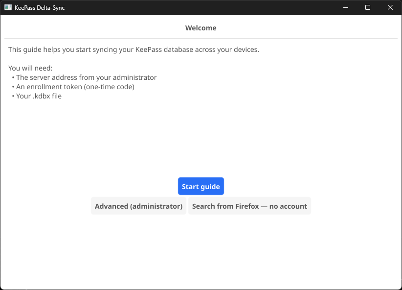
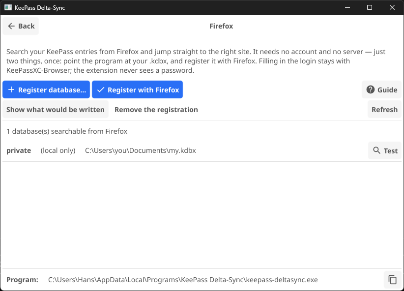
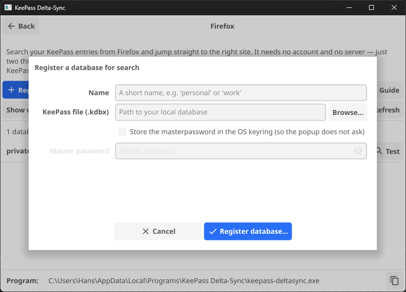

DeltaSync for Firefox
Type kp in the address bar, then a few letters of the account you are looking for, and Firefox takes you to that entry's website. That is the whole extension. It answers the question a password manager leaves you with — which site was that account on again? — and then gets out of the way.
Logging in is not its job. That stays with KeePassXC-Browser, which fills credentials but cannot help you find the page in the first place. This closes that gap and nothing else, which is why it never needs to see a password.
You do not need a DeltaSync server
DeltaSync is normally a sync system with a server behind it, but a search never touches the network: the extension asks a small local helper, which reads your own .kdbx file and answers from that alone. So there are two ways to set this up, and the second one has nothing to do with syncing:
- You already use DeltaSync — your database is registered with the client, and there is nothing extra to configure. Skip to step 2.
- You just want the search — install the client, point it at your
.kdbxwith one command, and never enroll against a server at all. That is step 1 below.
Either way, the first two steps can be clicked instead of typed. If you installed the desktop app, start with the short way — it is the same work, without a terminal.
What you need
- KeePassXC, for its
keepassxc-cli— that is what actually opens your database - The
keepass-deltasyncclient: a pre-built binary for Linux, macOS or Windows, or the Windows installer, which brings it along - Firefox 142 or newer — the extension itself comes from addons.mozilla.org in step 3
The short way — steps 1 and 2 with buttons
The two steps below are commands, and on Windows the client is not even on your PATH. The desktop app spares you both: they are two buttons on one screen, and that screen is reachable without an account. The result is identical, so if you would rather type, skip ahead to step 1.
Open KeePass Delta-Sync. If you have never enrolled a device it opens on its welcome screen, and the button you want says so:

That is the whole Firefox setup on one screen:

Step 1, with buttons: Register database…
Register database… is add-local with a file picker on it: give the database a short name, point at the .kdbx, done. Nothing is uploaded, and no server, token or account is involved.

--save-password. Tick it and the masterpassword is checked by opening the database before it is handed to your operating system's keyring — so the popup never asks. Leave it clear and the extension asks you instead.Step 2, with buttons: Register with Firefox
Register with Firefox is install-browser-host. It shows what it wrote and which Firefox variants it registered with — read that list, it is the answer to whether it found yours — and then reminds you to restart Firefox, which is what makes the registration take effect.
The list at the bottom of the screen is what the extension would be able to search. Test on a row runs the whole chain with the browser left out: it opens the database and prints exactly what Firefox would receive. If that works and the extension still does not, the problem sits between Firefox and the client — and the last section takes it from there.
That is steps 1 and 2 done. Carry on at step 3, the extension itself, which is the same either way.
Step 1 — point the client at your database
If you already sync with DeltaSync, this is done: enroll and init registered the database when you set the client up. Move on to step 2.
If you have no server, the client still needs to know which file to search. One command tells it, and nothing about that file goes anywhere:
keepass-deltasync add-local private ~/keepass/my.kdbxprivate is only a label — it appears in the popup when more than one database is unlocked. Repeat the command for each file you want searchable. No server, no token, no account is involved.
Add --save-password if you would rather not be asked for the master password every time the idle lock expires. It is verified by opening the database before it is kept, and it goes into your operating system's keyring — never into a file.
keepass-deltasync tui has the same section, and it is there whether or not you have an account.
Windows: where the client is, and where to type
The installer puts the app and the command-line client in the same folder, and which folder depends on the install you chose:
- Just for me — the default, no administrator prompt:
%LOCALAPPDATA%\Programs\KeePass Delta-Sync\ - For all users:
C:\Program Files\KeePass Delta-Sync\
keepass-deltasync.exe in that folder is what every command on this page means. It is not on your PATH, so the quickest way to a terminal that can see it is to open the folder in Explorer, click the address bar, type powershell and press Enter. The terminal opens in that folder, and the commands work with .\ in front:
.\keepass-deltasync.exe add-local private C:\Users\you\Documents\my.kdbxNot sure which install you have? Paste %LOCALAPPDATA%\Programs\KeePass Delta-Sync into Explorer's address bar; if that folder does not exist, it is the Program Files one. The app itself shows the path at the bottom of its Firefox tab.
Step 2 — let Firefox talk to the client
Firefox will not run a program unless it has been told about it first. One command does that:
keepass-deltasync install-browser-hostIt writes a small manifest into your own user profile — no administrator needed — and on Windows a registry key under HKCU. Add --dry-run first if you would like to see exactly what it would write. Run it again if you ever move the binary, since the manifest records where it lives.
Read what it prints: it lists every Firefox it registered with, and that list is the answer to whether it found yours. In the desktop app this is the Register with Firefox button, and it shows you the same output.
Linux: there is more than one Firefox
A packaged Firefox, a snap and a flatpak each read a different directory, and the command handles all three by itself. Two of them come with a catch:
- Snap — the default on Ubuntu 22.04 and newer. A confined Firefox cannot reach dot-directories in your home, so keep the binary somewhere plain such as
~/binrather than~/.local/bin. - Flatpak — the sandbox has to be allowed to reach the program at all. Run this once, then restart Firefox; an override does not reach an application that is already running:
flatpak override --user --talk-name=org.freedesktop.Flatpak org.mozilla.firefox
Not sure which one you have? snap list firefox and flatpak list | grep -i firefox settle it. Installing a different Firefox later means running install-browser-host again.
macOS: clear the quarantine flag
macOS marks anything downloaded with a browser, and Firefox starts the helper without a dialog you could approve — so a marked binary dies silently. Clear it once:
xattr -d com.apple.quarantine /usr/local/bin/keepass-deltasyncStep 3 — install the extension
It is on Mozilla's own add-on site, signed and reviewed:
Get DeltaSync — KeePass search & go
It asks for two permissions: native messaging, which is how it reaches the client from step 2, and storage, which holds the search index for as long as Firefox is open. It requests no host permissions and runs no content scripts, so it cannot see the pages you visit — and it never receives a password.
Restart Firefox after step 2 if you have not already. That is what makes it notice the client.
From source instead
The add-on is seven plain files with no build step, and the package published on the releases page is byte-reproducible from its tag — so you can check that what you install is what the source says. That build is unsigned, which decides how you can install it:
- Any Firefox, for a session:
about:debugging#/runtime/this-firefox→ Load Temporary Add-on… → pickextension/manifest.jsonfrom a clone. Firefox forgets it when it closes. - Developer Edition, Nightly or ESR, permanently: set
xpinstall.signatures.requiredtofalseinabout:config, then install the.xpifrom about:addons → the gear icon → Install Add-on From File…
The add-on ID is fixed either way, so remove one copy before installing the other.
Using it
- Address bar: type
kp, a space, then your search. Pick a suggestion and press Enter. - Popup: the toolbar button, or
Alt+Shift+K. Arrow keys move, Enter opens in the current tab, Ctrl/Cmd+Enter or middle-click opens a new one. - Lock: drops the cached index and tells the helper to wipe anything it is holding.
Searching matches on host name, title and group, and ranks host names highest — that is usually what you remember. An entry with several addresses (KeePassXC' Additional URLs) shows as one row with a badge; select it and every address unfolds beneath, best match first, so none of them is out of reach.
The first search after a restart needs your master password. If your database is in the OS keyring — which is what --save-password in step 1 arranges — the helper takes it from there itself, and it never passes through Firefox. If it is not, the popup asks, and the helper keeps it in memory only, wiping it when the idle lock expires or when you press Lock.
If something does not work
Nothing happens when I type kp
Firefox reads native messaging manifests at startup, so it has to be restarted after install-browser-host — a new window is not enough, the whole application must close.
If a restart does not do it, open the popup: when it cannot reach the helper it says so, and offers a button back to this page.
It worked, then stopped
The manifest records the full path to the client binary. If you moved, renamed or reinstalled it, run keepass-deltasync install-browser-host again.
Is it Firefox or is it my setup?
You can exercise the whole chain without the browser involved. This builds the index exactly as a search would and prints what the extension would receive:
keepass-deltasync browser-host --probe private
# No keyring entry for private — the extension would prompt here.
# Masterpassword for private:
# [ { "title": "Example account", "urls": ["https://example.com/login"], … } ]
# 1 searchable entries indexed from private.If that works and the extension does not, the problem is between Firefox and the helper — start with a restart. If it does not work either, the problem is the database binding or keepassxc-cli.
“keepassxc-cli not found”
The helper looks in the usual places for your platform. If yours lives somewhere unusual, confirm that is the problem by pointing at it directly:
keepass-deltasync browser-host --probe private --keepassxc-cli "/path/to/keepassxc-cli"To make it stick, add the same flag to the launcher that install-browser-host created — it prints the path to it, and to the manifest, every time you run it.
The popup says no databases are registered
Then the helper is running and answering — steps 2 and 3 are fine — and step 1 has not happened yet. Press Register database… in the desktop app, run keepass-deltasync add-local, or pick Firefox search in keepass-deltasync tui. keepass-deltasync databases lists what is registered; a search-only database is marked L.
Linux: it says it installed, but nothing happens
Almost always the Firefox variant. install-browser-host prints the ones it registered with — if yours is not on that list, it was not installed when you ran the command, and running it again fixes that.
If it is on the list, the sandbox is refusing to start the program: a flatpak without the flatpak override from step 2, or a snap with the binary in a dot-directory. Run the launcher by hand to tell the two apart — it is unconfined there, so if that works, the confinement is what is stopping it:
echo | ~/snap/firefox/common/keepass-deltasync/browser-host.shA stream of binary-looking output is success. Permission denied is not.
The design and its security boundaries are written up in docs/browser-extension.md. If you also want the syncing half of DeltaSync, start on the getting started page.